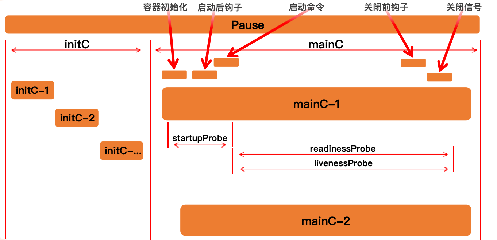

介绍了 Kubernetes 中 Pod 的概念、生命周期、Init 容器、容器钩子和健康检查探针等内容。
Pod生命周期

Pod 的生命周期指的是一个 Pod
从被创建到被销毁的整个过程。它遵循一个预定义的生命周期，从
Pending 状态开始，如果至少有一个主容器正常启动，则进入
Running 状态，之后根据容器的运行情况可能进入
Succeeded 或 Failed 状态。
整个生命周期主要包含以下几个关键环节：
- Init 容器 (Init Containers)：在应用容器启动前执行的一系列初始化任务。
- 容器钩子 (Container
Hooks)：在容器生命周期的特定时间点执行的操作，如
postStart和preStop。 - 健康检查探针 (Probes)：包括启动探针
(
startupProbe)、存活探针 (livenessProbe) 和就绪探针 (readinessProbe)，用于监控容器的健康状况。 - Pod 的终止 (Pod Termination)：Pod 被删除时的优雅关闭流程。
Init-Container (初始化容器)
init 容器与普通的容器（应用容器）非常像，除了如下两点：
- init 容器总是运行到成功完成为止。
- 每个 init 容器都必须在下一个 init 容器启动之前成功完成。
如果 Pod 的 Init 容器失败，Kubernetes 会根据 Pod 的
restartPolicy（重启策略）不断地重启该 Pod，直到所有 Init
容器都成功为止。然而，如果 Pod 对应的 restartPolicy 为
Never，那么 Kubernetes 不会重新启动 Pod，并直接宣告 Pod
创建失败，状态置为 Failed。
Init 容器的核心优势和应用场景：
- 分离启动依赖：可以将应用容器启动前所需的准备工作（如等待依赖服务、下载配置文件、执行数据库迁移等）与主应用逻辑解耦。
- 增强安全性：Init
容器与应用容器可以使用不同的镜像。可以将一些包含敏感工具（如
wget,curl）或需要更高权限的脚本放在 Init 容器中，而保持主应用容器的镜像是最小化和最安全的。 - 顺序执行：多个 Init 容器按定义的顺序依次执行。这使得我们可以构建一系列有依赖关系的初始化任务。例如，第一个 Init 容器下载代码，第二个 Init 容器编译代码。
- 资源共享：Init 容器可以和应用容器共享
Volumes和Network。这是它们之间传递数据和进行通信的基础。
注意：
- Init 容器不支持
readinessProbe、livenessProbe或startupProbe，因为它们必须在应用容器启动前运行至完成。- 在 Pod 的资源限制中，Pod 的有效 Init 资源请求/限制是所有 Init 容器和应用容器中，每个资源（如 CPU、内存）的最大值。
示例：使用 Init 容器下载文件
在下面的例子中，init-downloader 容器首先启动，使用
wget 将一个文件下载到共享卷
/data/file。当它成功退出后，主容器 main-app
启动，并可以直接从挂载的路径 /app/data/file
访问这个已经准备好的文件。
1 | apiVersion: v1 |
容器钩子 (Container Hooks)
容器钩子（Hook）是由 kubelet
管理和触发的，它允许你在容器生命周期的关键时间点执行预定义的操作。这为我们提供了一种在不修改容器镜像的情况下，影响和管理容器行为的强大机制。
Kubernetes 提供了两种类型的钩子：
postStart(启动后钩子):- 触发时机：在容器被创建后立刻执行。
- 执行特性：它与容器的主进程
(
ENTRYPOINT/CMD) 异步执行。Kubernetes 不会等待postStart钩子执行完成才将容器状态置为Running。如果钩子执行失败，kubelet会杀死该容器。 - 常见用途：执行一些初始化操作，如预热缓存、注册到服务发现中心、执行环境准备脚本等。
preStop(停止前钩子):- 触发时机：在容器被终止之前执行。当
kubelet决定要关闭一个容器时（例如，由于 Pod 被删除或健康检查失败），会首先调用preStop钩子。 - 执行特性：它是阻塞式的。
kubelet会等待preStop钩子执行完成，或者等待 Pod 的优雅终止宽限期 (terminationGracePeriodSeconds) 超时，然后才会向容器的主进程发送TERM信号。 - 常见用途：实现应用的优雅下线。例如，通知负载均衡器移除当前节点、保存应用状态到持久化存储、关闭数据库连接等。
- 触发时机：在容器被终止之前执行。当
钩子的处理器（Handler）有两种实现方式：
exec: 在容器内执行一个指定的命令。httpGet: 向容器的指定端口和路径发送一个 HTTP GET 请求。
示例：使用 postStart 和 preStop
钩子
1 | apiVersion: v1 |
健康检查探针 (Health Probes)
探针是由 kubelet
对容器执行的周期性诊断，用于判断容器是否健康、是否准备好提供服务。这是实现应用自愈和高可用的核心机制。
每次探测都会有以下三种结果之一：
Success(成功): 容器通过了诊断。Failure(失败): 容器未通过诊断。Unknown(未知): 诊断本身失败（例如网络问题），kubelet不会采取任何行动。
探针的实现方式与钩子类似，也支持 exec,
httpGet, 和 tcpSocket (检查端口是否开放)。
livenessProbe (存活探针)
- 作用：判断容器是否还活着。
- 失败后果：如果存活探针连续失败达到
failureThreshold次，kubelet会杀死该容器，并根据其restartPolicy决定是否重启。这用于解决应用死锁等问题，即进程虽然存在但无法正常工作。 - 配置参数：
initialDelaySeconds: 容器启动后，延迟多少秒再开始第一次探测。periodSeconds: 每隔多少秒探测一次。timeoutSeconds: 探测超时时间。failureThreshold: 连续探测失败多少次后，才认为容器已死。successThreshold: 连续探测成功多少次后，才认为容器从失败状态恢复。
readinessProbe (就绪探针)
- 作用：判断容器是否准备好接收流量。
- 失败后果：如果就绪探针失败，
kubelet会将该 Pod 的 IP 从所有匹配的 Service 的 Endpoints 列表中移除。这样，新的流量就不会被转发到这个还未准备好的 Pod 上。这对于控制服务上线和滚动更新至关重要。 - 典型场景：一个应用可能已经启动，但需要几分钟时间加载大量数据或配置后才能对外提供服务。此时就绪探针可以防止未就绪的 Pod 接收到流量。
startupProbe (启动探针)
- 作用：判断容器内的应用是否已经启动完成。它主要用于那些启动时间非常长的应用。
- 失败后果：如果启动探针在
failureThreshold * periodSeconds的总时间内还未成功，kubelet会杀死并重启容器，行为与存活探针类似。 - 与其它探针的关系：如果定义了启动探针，那么在它成功之前，
livenessProbe和readinessProbe都会被禁用。一旦启动探针成功，kubelet就会切换到使用存活和就绪探针。这可以防止慢启动的应用在启动过程中被存活探针误杀。
综合示例：三种探针的协同工作
1 | apiVersion: v1 |